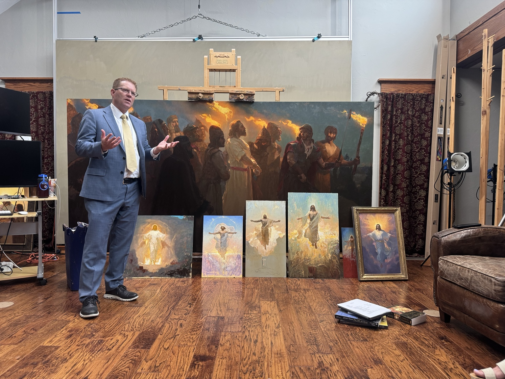
Submission
Discover the painting
THE VISION
To help the world see Him in a way it never has before.
He Is Risen is creating a monumental visual account of the final week of the Savior’s mortal life through the work of internationally recognized artist Michael Malm.
Some scenes will be reimagined from new perspectives. Others will depict moments rarely—or perhaps never—given this scale on canvas. The aim is simple: invite all people of every tradition, culture, and background to encounter Jesus Christ through beauty, story, and sacred art.
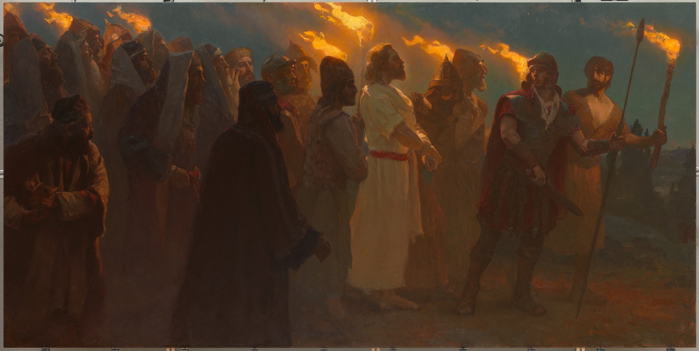
THE COLLECTION
Painted at a scale
meant to be experienced.
Each painting is a chapter in one sacred story: love, sacrifice, suffering, triumph, and Resurrection.
EXPLORE THE COLLECTION →THE ARTWORK
A sacred story unfolding on canvas.
Explore monumental compositions and intimate studies from Michael Malm's artistic journey.
The Arrest of Christ
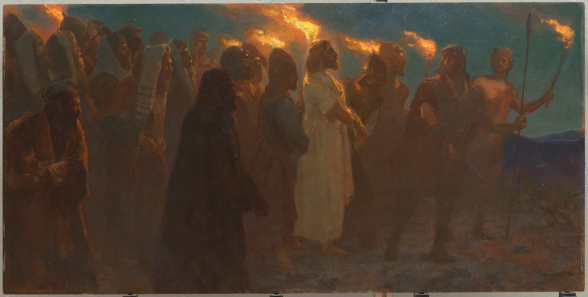
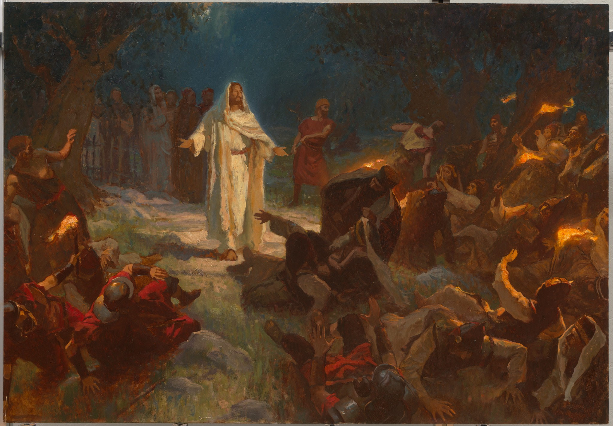
The Way to Calvary
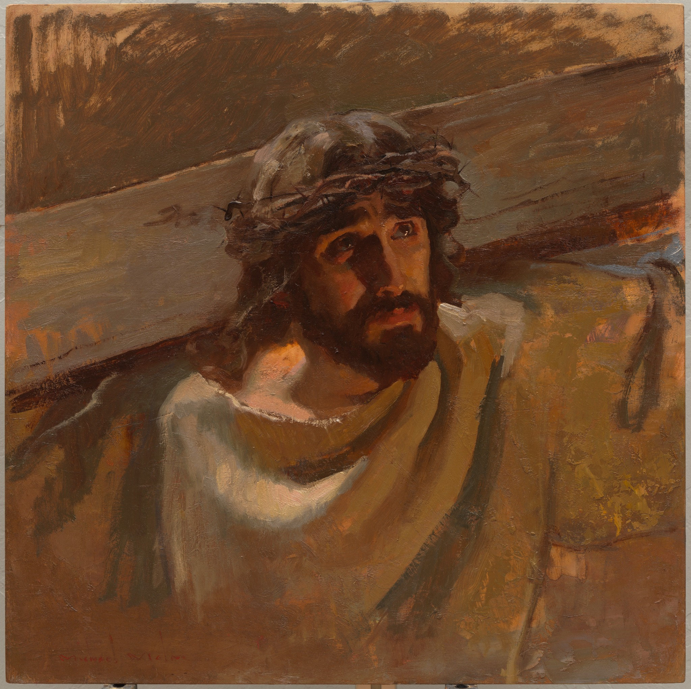
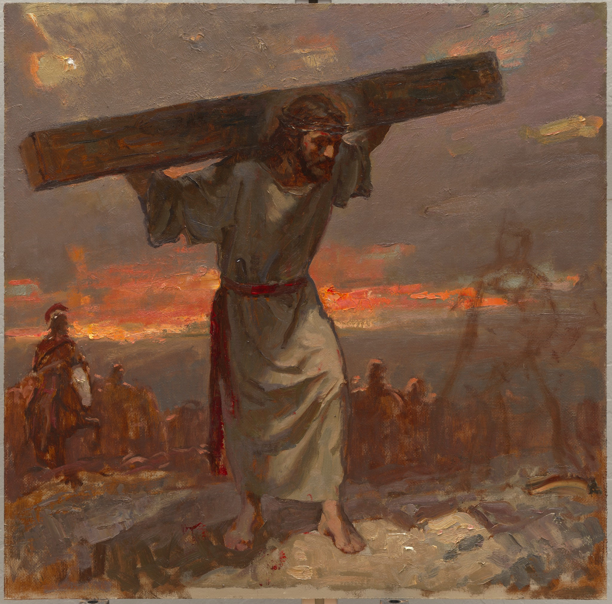
The Crucifixion
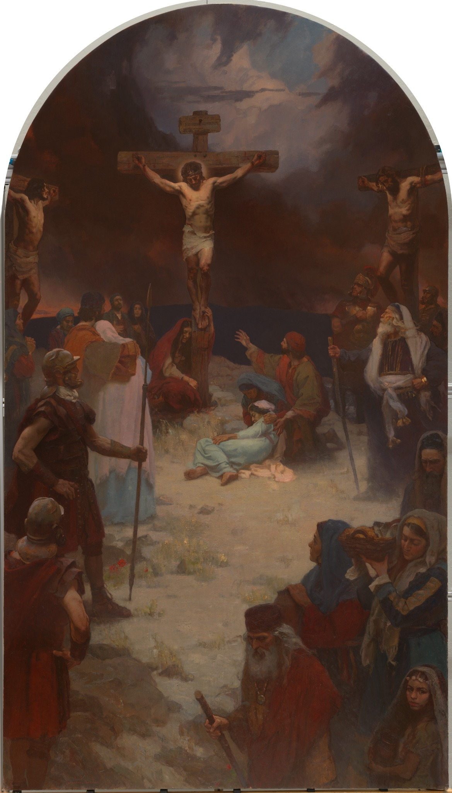
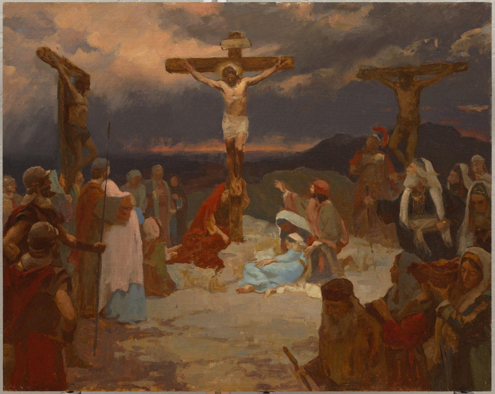
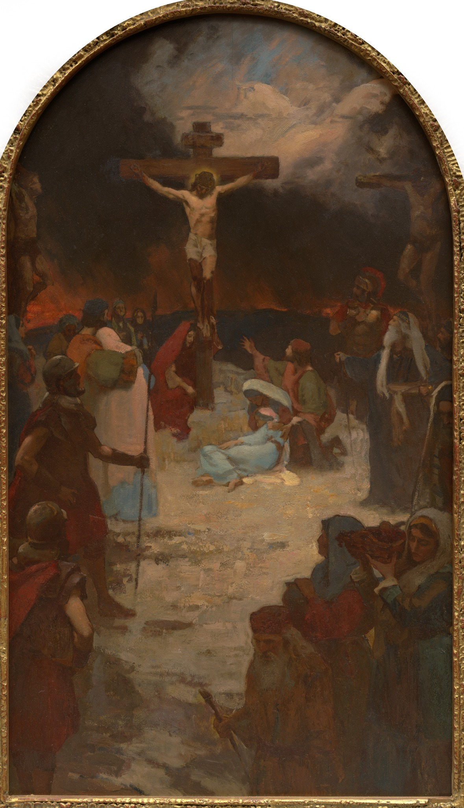
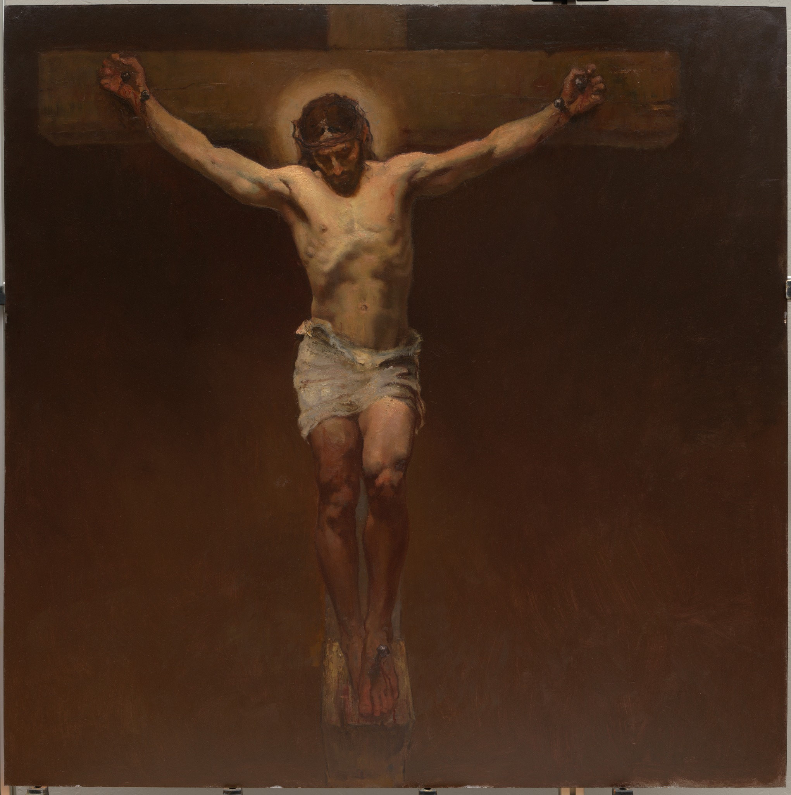
The Resurrection
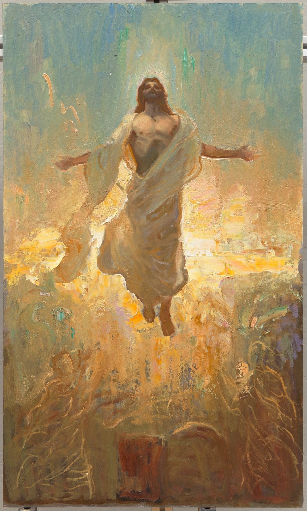
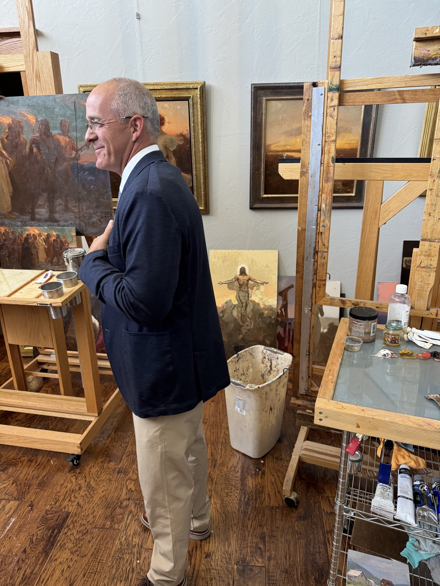
THE ARTIST
Michael Malm
An acclaimed American painter bringing a lifetime of artistic mastery to the final week of Jesus Christ’s life.
Michael Malm earned his MFA from Utah State University and has spent decades studying the human figure, light, emotion, and sacred subjects. His paintings seek to move the viewer—to uplift and inspire.
He Is Risen is among the most ambitious undertakings of his career: a years-long collection of monumental paintings portraying the final week, death, and Resurrection of Jesus Christ—created to be experienced by audiences around the world.
The vision is to create sacred art that will endure for generations.
INSIDE THE STUDIO →THE JOURNEY
Witness the creation
before the world sees it.
From early sketches and theological research to models, composition studies, full-scale canvases, framing, conservation, and exhibition design, the journey toward 2030 is part of the story.
The Collection Grows
Three paintings completed. New monumental works enter production.
Creation & Preparation
Paintings, scholarship, exhibition design, partnerships, fundraising, and venue development.
The World Exhibition
The collection begins its journey to prestigious cultural venues and audiences around the world.
THE 2030 WORLD EXHIBITION
A global exhibition.
A lasting impact.
Our goal is to bring this collection to exceptional museums, galleries, cultural institutions, and sacred spaces around the world—creating encounters with Christ that cross borders, traditions, and generations.
JOIN THE MISSION
Help bring
Christ to the world.
FOUNDING SUPPORT
Be part of the story
before it reaches the world.
Philanthropic support will make possible the creation of the paintings, scholarly and curatorial work, conservation, exhibition design, transportation, insurance, venue partnerships, and the 2030 international tour.
Begin a Giving Conversation →